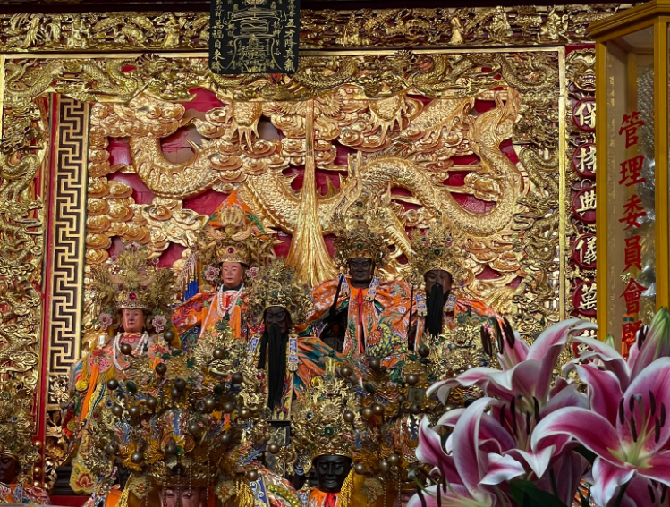
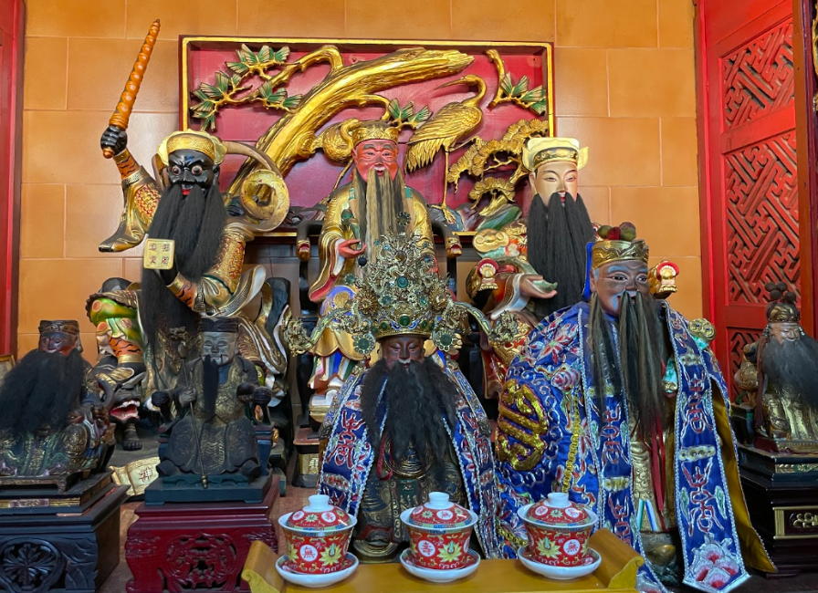
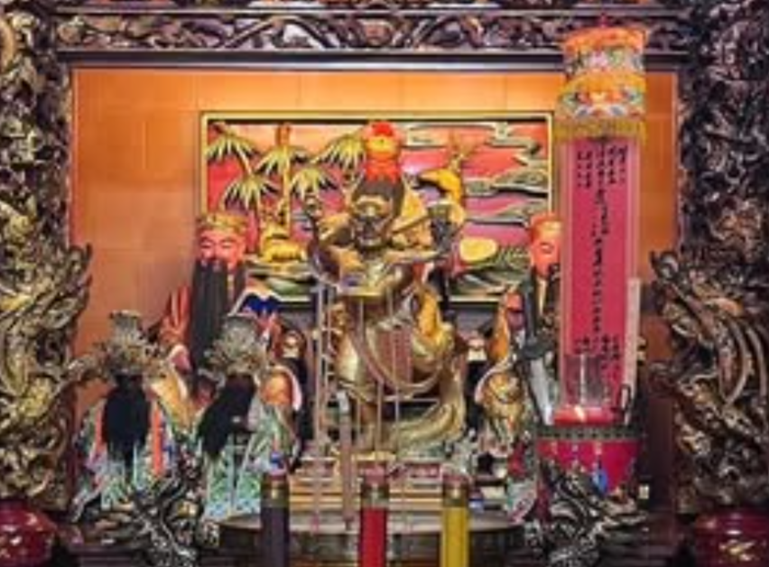

神明介紹
主祀神明

保儀尊王
忠義的象徵與榜樣、驅邪除疫、保護平安
唐代安史之亂中，張巡（保儀尊王）與許遠（保儀大夫）堅守睢陽，以寡敵眾，壯烈殉國，其忠勇事蹟延緩燕軍南下，保全江淮，對唐朝平亂功不可沒。亂事平息後，唐肅宗建「雙忠廟」祭祀。宋朝追封張巡為「保儀尊王」，許遠為「保儀大夫」。張巡愛妾為軍糧犧牲，亦被追封「申國夫人」，流傳千古。他們的忠義精神與對地方的守護，成為民間信仰中重要的神祇。
配祀神明

財神
文財神、武財神、偏財神
文財神如比干，掌管穩定、正當財富，象徵誠信與智慧生財，信眾多祈求學業、事業順遂。武財神則像趙公明，帶來動態、快速的財富，深受投資者和商人信賴，祈求事業突破與財富安全。而偏財神如土地公，則掌管意外之財與橫財，是信眾在投資、博弈或尋求額外收入時的寄託。這三類財神各司其職，共同滿足人們對財富的不同祈求。

文昌帝君
功名、學業
保佑學子們讀書順利、金榜題名，也庇佑文職人員事業晉升。古時士人期盼文昌帝君眷顧以求科舉高中，現今學生、家長仍會前往祈福，期望學業與職場競爭中脫穎而出。祭拜時常備芹菜、蔥等，象徵勤學聰明，展現對學業精進的期盼。